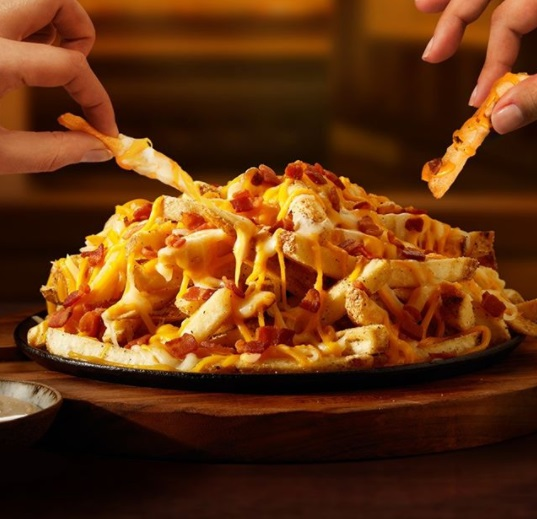
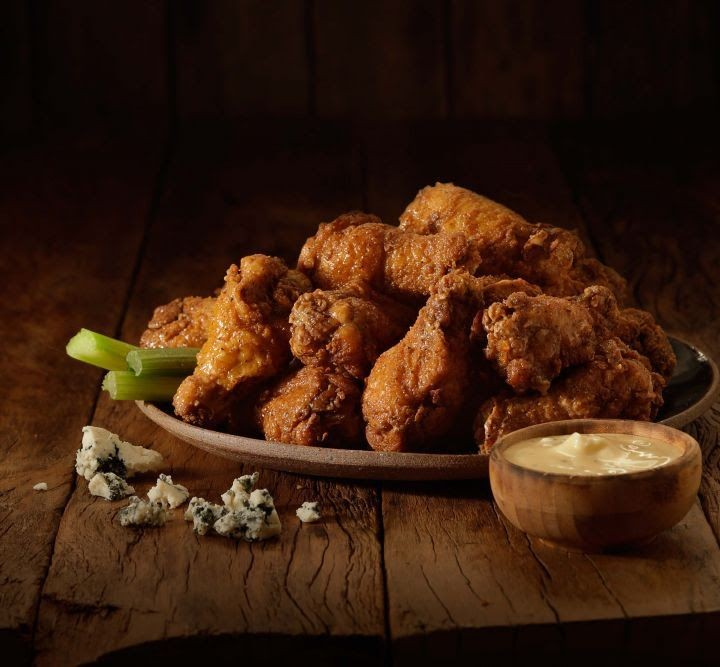
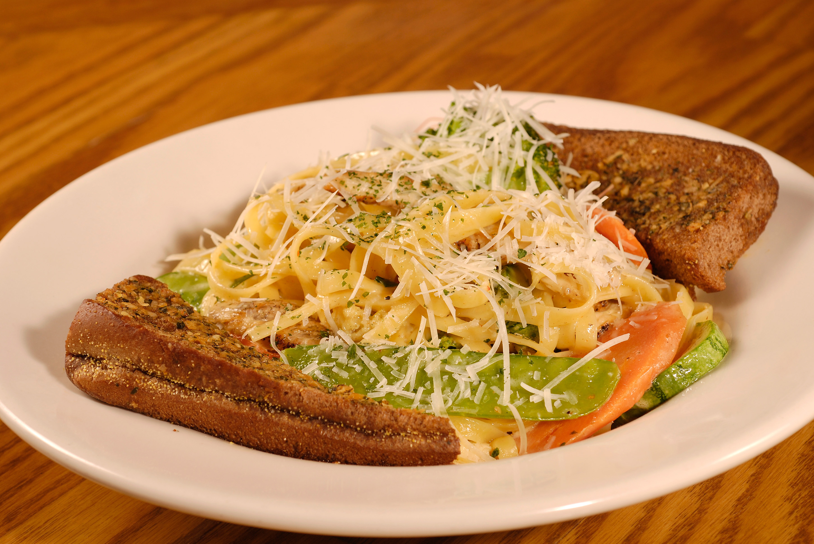
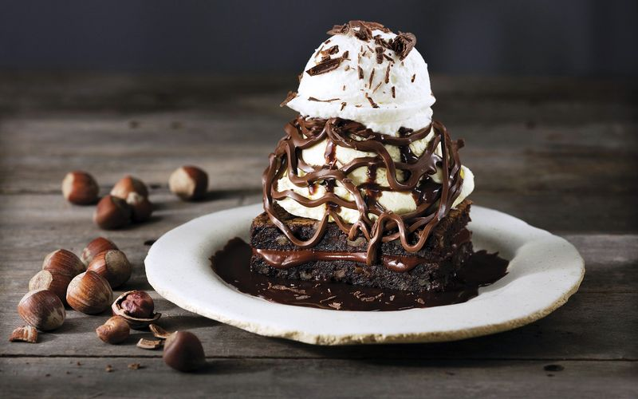

Comidas Favoritas:
Aperitivos:
-

Aussie Cheese Fries - OutbackFritas com uma cobertura irresistível com mix de queijos e bacon. O toque final fica por conta do molho Ranch.
-

Super Wings - OutbackSão 15 sobreasas de frango servidas com o molho Blue Cheese (contém açúcar e lactose) e aipo crocante. Nas opções light, médio ou hot. Contém glúten.
-

Chicken Pasta Primavera - OutbackFettuccine tradicional com legumes e tiras de frango grelhado, refogado com um cremoso molho Alfredo e coberto com queijo parmesão
-

Teppan de Salmão - JaponesaSalmão grelhado acompanhado com arroz, missoshiru e legumes no vapor.
-

Chocolate Thunder From Down Under - OutbackBrownie exclusivo e quentinho com sorvete de baunilha e deliciosa calda de chocolate preparada diariamente no Outback. Finalizado com chantilly e raspas de chocolate.